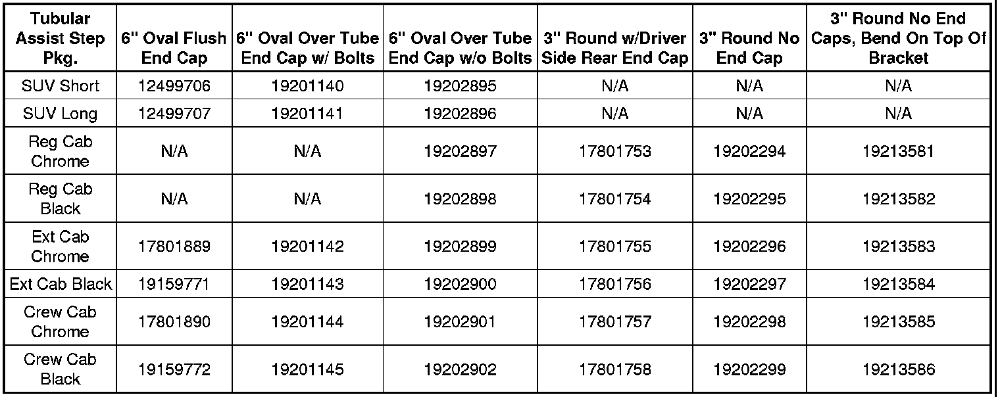
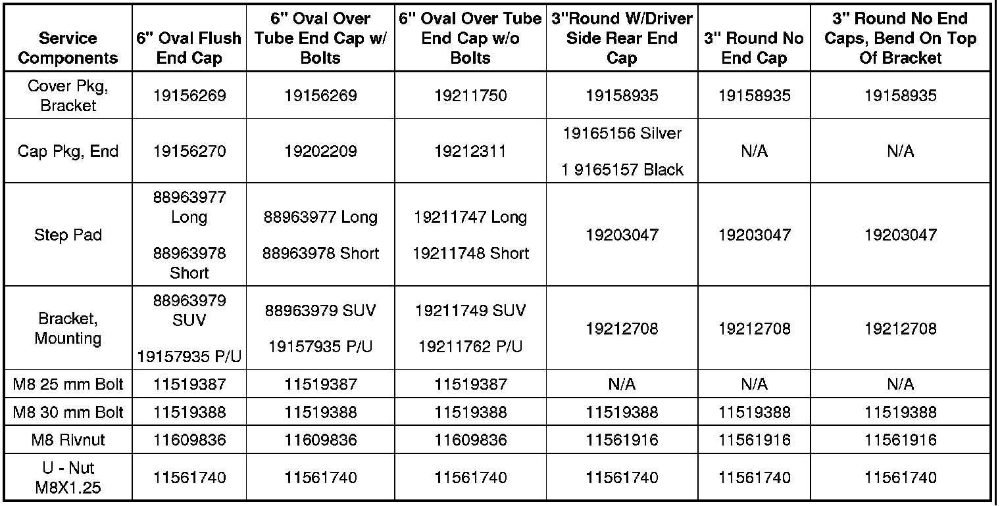

Body - Tubular Assist Step Service Parts Cpomponents
INFORMATIONBulletin No.: 09-08-61-001A
Date: October 21, 2009
Subject: Information on Tubular Assist Step Service Part Component Availability
Models:
2007-2009 Cadillac Escalade, Escalade ESV, Escalade EXT
2007-2009 Chevrolet Avalanche, Silverado, Suburban, Tahoe
2007-2009 GMC Sierra, Yukon, Yukon XL
Supercede:
This bulletin is being revised to add the 3" round service components. Please discard Corporate Bulletin Number 09-08-61-001 (Section 08 - Body and Accessories).
Service Component Availability
Some dealers have submitted warranty claims against and replaced entire tubular assist step packages for customer concerns that only require the replacement of a serviced component.
Dealers may not have been aware that the components of the tubular assist step packages, such as brackets, end caps, step pads and mounting hardware are available as service parts. This information is in the chart below.
Instructions
If the condition can be corrected with a component replacement instead of replacing the tubular assist step packages, order the component only. Use the attached parts information to order the components. The parts are in Group 21.506B in the Service Parts Catalog.


Parts Information

Disclaimer